전기산업기사 (2015-08-16 기출문제)
1과목: 전기자기학
1. 맥스웰의 전자 방정식 중 페러데이의 법칙에 의하여 유도된 방정식은?
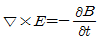
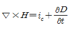
- divD=p
- divB=0
(정답률: 66%)

2. 전자석에 사용하는 연철(soft iron)은 다음 어느 성질을 갖는가?
- 잔류자기, 보자력이 모두 크다.
- 보자력이 크고 잔류자기가 작다.
- 보자력이 크고 히스테리시스 곡선의 면적이 작다.
- 보자력과 히스테리시스 곡선의 면적이 모두 작다.
(정답률: 64%)
3. 면적이 s[m2], 극사이의 거리가 d[m], 유전체의 비유전율이 ℇs인 평판 콘덴서의 정전용량은 몇 [F]인가?
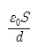
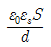
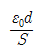
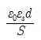
(정답률: 81%)
4. 전기저항 R과 정전용량 C, 고유저항 p및 유전율 ℇ사이의 관계로 옳은것은?
- RC=pℇ
- RP=Cℇ
- C=Rpℇ
- R=ℇPC
(정답률: 83%)
5. 환상 솔레노이드 코일에 흐르는 전류가 2A일 때 자로의 자속이 10-2[Wb]였다고 한다. 코일의 권수를 500회라고 하면, 이 코일의 자기인덕턴스는 몇 H인가? (단, 코일의 전류와 자로의 자속과의 관계는 비례하는 것으로 한다.)
- 2.5
- 3.5
- 4.5
- 5.5
(정답률: 82%)
6. 한번의 길이가 a[m]인 정육각형의 각 정점에 각각 Q[C]의 전하를 놓았을 때, 정육각형의 중심 0의 전계의 세기는 몇 [V/m]인가?
- 0
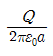
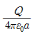
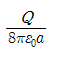
(정답률: 81%)
7. 그림과 같이 판의 면적
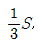
, 두께 d와 판면적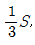
, 두께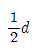
되는 유전체(ℇs=3)를 끼웠을 경우의 정전용량은 처음의 몇 배인가?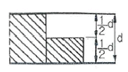
- 1/6
- 5/6
- 11/6
- 13/6
(정답률: 66%)
8. 반지름 a[m]의 도체구와 내외 반지름이 각각 b[m], c[m]인 도체구가 동심으로 되어 있다. 두 도체구 사이에 비유전율 ℇs인 유전체를 채웠을 경우의 정전용량[F]은?
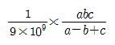
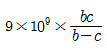
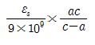
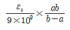
(정답률: 60%)
9. 동일한 두 도체를 같은 에너지 W1=W2로 충전한 후에 이들을 병렬로 연결하였다. 총에너지 W 의 관계로 옳은 것은?
- W1+W2＜W
- W1+W2=W
- W1+W2＞W
- W1-W2=W
(정답률: 70%)
10. 자계가 보존적인 경우를 나타내는 것은? (단, j는 공간상의 0이 아닌 전류 밀도를 의미한다.)
- ▽ ㆍ B=0
- ▽ ㆍ B=j
- ▽×H=0
- ▽×H=j
(정답률: 53%)
11. 투자율 μ1 및 μ2인 두 자성체의 경계면에서 자력선의 굴절법칙을 나타낸 식은?
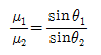
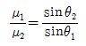
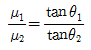
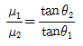
(정답률: 84%)
12. 코로나 방전이 3×106[V/m] 난다고 하면 반지름 10cm인 도체구에 저축할 수 있는 최대 전하량은 몇 [C]인가?
- 0.33×10-5
- 0.72×10-6
- 0.33×10-7
- 0.98×10-8
(정답률: 52%)
13. 반지름이 3mm, 4mm인 2개의 절연도체구에 각각 5V, 8V가 되도록 충전한 후 가는 도선으로 연결할 때 공통전위는 몇 V인가?
- 3.14
- 4.27
- 5.56
- 6.71
(정답률: 56%)
14. 금속도체의 전기저항은 일반적으로 온도와 어떤 관계인가?
- 전기저항은 온도의 변화에 무관하다.
- 전기저항은 온도의 변화에 대해 정특성을 가진다.
- 전기저항은 온도의 변화에 대해 부특성을 가진다.
- 금속도체의 종류에 따라 전기저항의 온도 특성은 일관성이 없다.
(정답률: 83%)
15. 자기인덕턴스와 상호인덕턴스와의 관계에서 결합계수 k에 영향을 주지 않는 것은?
- 코일의 형상
- 코일의 크기
- 코일의 재질
- 코일의 상대위치
(정답률: 68%)
16. 두 종류의 금속 접합면에 전류를 흘리면 접속점에서 열의 흡수 또는 발생이 일어나는 현상은?
- 제벡 효과
- 펠티에 효과
- 톰슨 효과
- 코일의 상대 위치
(정답률: 73%)
17. 위치함수로 주어지는 벡터량이 E(x, y, z)=iEx+jEy+kEz이다. 나블라(▽)와의 내적 ▽ ㆍ E와 같은 의미를 갖는 것은?
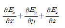
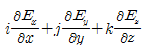
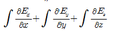
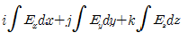
(정답률: 65%)
18. 대기중의 두 전극 사이에 있는 어떤 점의 전계의 세기가 E=3.5[V/㎝], 지면의 도전율이 k=10-4[℧/m]일 때, 이 점의 전류밀도[A/m2]는?
- 1.5×10-2
- 2.5×10-2
- 3.5×10-2
- 4.5×10-2
(정답률: 78%)
19. 100[MHz]의 전자파의 파장 [m]은?
- 0.3
- 0.6
- 3
- 6
(정답률: 58%)
20. ø=ømsin2πft[Wb][Wb]일때, 이 자속과 쇄교하는 권수 N회인 코일에 발생하는 기전력[V]은?
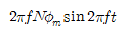
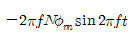
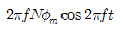
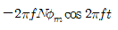
(정답률: 54%)
2과목: 전력공학
21. 그림과 같이 반지름 r[m]인 세 개의 도체가 선간거리 D[m]로 수평배치 하였을 때 A도체의 인덕턴스는 몇 mH/km인가?
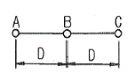
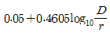
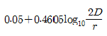
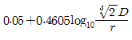
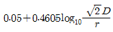
(정답률: 64%)
22. 송전선로의 저항은 R, 리액턴스를 X라 하면 성립하는 식은?
- R≥2X
- R＜X
- R=X
- R＞X
(정답률: 69%)
23. 주상변압기의 고압측 및 저압측에 설치되는 보호장치가 아닌 것은?
- 피뢰기
- 1차 컷아웃 스위치
- 캐치홀더
- 케이블 헤드
(정답률: 63%)
24. 유효낙차 50m, 최대사용수량 20m3/s, 수차효율 87%, 발전기 효율 97%인 수력발전소의 최대 출력은 몇 kW인가?
- 7570
- 8070
- 8270
- 8570
(정답률: 67%)
25. 과전류 계전기의 반한시 특성이란?
- 동작전류가 커질수록 동작시간이 짧아진다.
- 동작전류가 적을수록 동작시간이 짧아진다.
- 동작전류에 관계없이 동작시간은 일정하다.
- 동작전류가 커질수록 동작시간이 길어진다.
(정답률: 78%)
26. 장거리 송전선에서 단위 길이당 임피던스 Z=r+jwL[Ω/㎞], 어드미턴스 Y=g+jwC[℧/㎞]라 할때 저항과 누설컨덕턴스를 무시하면 특성임피던스의 값은?
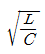
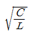
- L/C
- C/L
(정답률: 81%)
27. 콘덴서형 계기용 변압기의 특징으로 틀린것은?
- 권선형에 비해 오차가 적고 특성이 좋다.
- 절연의 신뢰도가 권선형에 비해 크다.
- 전력선 반송용 결합 콘덴서와 공용할 수 있다.
- 고압 회로용의 경우는 권선형에 비해 소형 경량이다.
(정답률: 51%)
28. 동일 전력을 수송할 때 다른 조건은 그대로 두고 역률을 개선한 경우의 효과로 옳지 않은 것은?
- 선로변압기 등의 저항손이 역률의 제곱에 반비례하여 감소한다.
- 변압기, 개폐기 등의 소요 용량은 역률에 비례하여 감소한다.
- 선로의 송전용량이 그 허용전류에 의하여 제한될 때는 선로의 송전 용량도 증가한다.
- 전압강하는
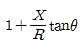
에 비례하여 감소한다.
(정답률: 40%)
29. 배전선로의 전압강하의 정도를 나타내는 식이 아닌 것은? (단, ES 송전단 전압, ER은 수전단 전압이다.)
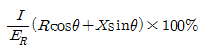
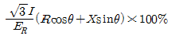
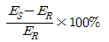
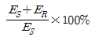
(정답률: 75%)
30. 소호 원리에 따른 차단기의 종류 중에서 소호실에서 아크에 의한 절연유 분해가스의 흡부력을 이용하여 차단하는 것은?
- 유입 차단기
- 기중 차단기
- 자기 차단기
- 가스 차단기
(정답률: 67%)
31. 출력 5000kW, 유효낙차 50m인 수차에서 안내 날개의 개방상태나 효율의 변화 없이 일정할 때 유효낙차가 5m 줄었을 경우 출력은 약 몇 kW인가?
- 4000
- 4270
- 4500
- 4740
(정답률: 50%)
32. 비접지식 송전선로에서 1선 지락고장이 생겼을 경우 지락점에 흐르는 전류는?
- 직선성을 가진 직류이다.
- 고장 상의 전압과 동상의 전류이다.
- 고장 상의 전압보다 90°늦은 전류이다.
- 고장 상의 전압보다 90°빠른 전류이다.
(정답률: 54%)
33. 다음 사항 중 가공 송전선로의 코로나 손실과 관계가 없는 것은?
- 전원 주파수
- 전선의 연가
- 상대 공기밀도
- 선간거리
(정답률: 56%)
34. 송전선로에 낙뢰를 방지하기 위하여 설치하는 것은?
- 댐퍼
- 초호환
- 가공지선
- 애자
(정답률: 75%)
35. 배전방식으로 저압 네트워크 방식이 적당한 경우는?
- 부하가 밀집되어 있는 시가지
- 바람이 많은 어촌지역
- 농촌지역
- 화학공장
(정답률: 79%)
36. 차단 시 재점호가 발생하기 쉬운 경우는?
- R-L 회로의 차단
- 단락 전류의 차단
- C회로의 차단
- L회로의 차단
(정답률: 70%)
37. 뇌서지와 개폐서지의 파두장과 파미장에 대한 설명으로 옳은 것은?
- 파두장과 파미장이 모두 같다.
- 파두장은 같고 파미장은 다르다.
- 파두장이 다르고 파미장은 같다.
- 파두장과 파미장이 모두 다르다.
(정답률: 61%)
38. 전선이 조영재에 접근할 때에나 조영재를 관통하는 경우에 사용되는 것은?
- 노브애자
- 애관
- 서비스캡
- 유니버셜 커플링
(정답률: 67%)
39. 동일한 전압에서 동일한 전력을 송전할 때 역률을 0.7에서 0.95로 개선하면 전력손실은 개선 전에 비해 약 몇%인가?
- 80
- 65
- 54
- 40
(정답률: 49%)
40. 3상 Y결선된 발전기가 무부하 상태로 운전 중 3상 단락 고장이 발생하였을 때 나타나는 현상으로 틀린 것은?
- 영상분 전류는 흐르지 않는다.
- 역상분 전류는 흐르지 않는다.
- 3상 단락 전류는 정상분 전류의 3배가 흐른다.
- 정상분 전류는 영상분 및 역상분 임피던스에 무관하고 정상분 임피던스에 반비례한다.
(정답률: 56%)
3과목: 전기기기
41. 중부하에서도 기동되도록 하고 회전계자형의 동기 전동기에 고정자인 전기자 부분이 회전자의 주위를 회전할 수 있도록 2중 베어링의 구조를 가지고 있는 전동기는?
- 유도자형 전동기
- 유도 동기 전동기
- 초동기 전동기
- 반작용 전동기
(정답률: 54%)
42. 유도 전동기의 공극에 관한 설명으로 틀린 것은?
- 공극은 일반적으로 0.3~2.5mm 정도이다.
- 공극이 넓으면 여자 전류가 커지고 역률이 현저하게 떨어진다.
- 공극이 좁으면 기계적으로 약간의 불평형이 생겨도 진동과 소음의 원인이 된다.
- 공극이 좁으면 누설리액턴스가 증가하여 순간 최대전력이 증가하고 철손이 증가한다.
(정답률: 60%)
43. 단상 전파 정류의 맥동률은?
- 0.17
- 0.34
- 0.48
- 0.86
(정답률: 65%)
44. 직류기의 권선법에 대한 설명 중 틀린 것은?
- 전기자 권선에 환상권은 거의 사용되지 않는다.
- 전기자 권선에는 고상권이 주로 사용된다.
- 정류를 양호하게 하기 위해 단절권이 이용된다.
- 저전압 대전류 직류기에는 파권이 적당하며 고전압 직류기에는 중권이 적당하다.
(정답률: 60%)
45. 반발 전동기(reaction motor)의 특성에 대한 설명으로 옳은 것은?
- 분권 특성이다.
- 기동 토크가 특히 큰 전동기이다.
- 직권특성으로 부하 증가 시 속도가 상승한다.
- 1/2 동기 속도에서 정류가 양호하다.
(정답률: 66%)
46. 고압 단상변압기의 %임피던스 강하 4%, 2차 정격전류를 300A라 하면 정격 전압의 2차 단락 전류[A]는? (단, 변압기에서 전원측의 임피던스는 무시한다.)
- 0.75
- 75
- 1200
- 7500
(정답률: 58%)
47. 3상 유도전동기의 운전 중 전압을 80%로 낮추면 부하 회전력은 몇 %로 감소되는가?
- 94
- 80
- 72
- 64
(정답률: 67%)
48. 단상 정류자 전동기에 보상권선을 사용하는 이유는?
- 정류개선
- 기동토크 조절
- 속도제어
- 역률개선
(정답률: 58%)
49. 단상 직권정류자 전동기에 전기자 권선의 권수를 계자 권수에 비해 많게 하는 이유가 아닌것은?
- 주자속을 작게하고 토크를 증가시키기 위하여
- 속도 기전력을 크게 하기 위하여
- 변압기 기전력을 크게 하기 위하여
- 역률 저하를 방지하기 위하여
(정답률: 41%)
50. 3상 유도전동기의 원선도를 작성하는데 필요하지 않은 것은?
- 구속 시험
- 무부하 시험
- 슬립 측정
- 저항 측정
(정답률: 78%)
51. 변압기의 병렬운전에서 1차 환산 누설임피던스가 2+j3Ω 과 3+j2Ω일 때 변압기에 흐르는 부하 전류가 50A이면순환전류[A]는?(단, 다른 정격은 모두 같다.)
- 10
- 8
- 5
- 3
(정답률: 39%)
52. 터빈 발전기의 출력 1350kVA, 2극, 3600rpm, 11kV일 때 역률 80%에서 전부하 효율이 96%라 하면 이 때의 손실 전력[kW]은?
- 36.6
- 45
- 56.6
- 65
(정답률: 36%)
53. 1방향성 4단자 사이리스터는?
- TRIAC
- SCS
- SCR
- SSS
(정답률: 58%)
54. T결선에 의하여 3300V의 3상으로부터 200V, 40KVA의 전력을 얻는 경우 T좌 변압기의 권수비는 약 얼마인가?
- 16.5
- 14.3
- 11.7
- 10.2
(정답률: 51%)
55. 직류 분권 전동기 기동 시 계자 저항기의 저항값은?
- 최대로 해둔다.
- 0으로 해둔다.
- 중간으로 해둔다.
- 1/3로 해둔다.
(정답률: 76%)
56. 3상 동기발전기를 병렬 운전하는 도중 여자 전류를 증가시킨 발전기에서 일어나는 현상은?
- 무효전류가 증가한다.
- 역률이 좋아진다.
- 전압이 높아진다.
- 출력이 커진다.
(정답률: 55%)
57. 유도 전동기로 직류 발전기를 회전시킬 때, 직류 발전기의 부하를 증가시키면 유도 전동기의 속도는?
- 증가한다.
- 감소한다.
- 변함이 없다.
- 동기속도 이상으로 회전한다.
(정답률: 50%)
58. 직류 타여자발전기의 부하 전류와 전기자 전류의 크기는?
- 부하 전류가 전기자 전류보다 크다.
- 전기자 전류가 부하 전류보다 크다.
- 전기자 전류와 부하 전류가 같다.
- 전기자 전류와 부하 전류는 항상 0이다.
(정답률: 59%)
59. 5kVA, 2000/200V의 단상 변압기가 있다. 2차로 환산한 등가저항과 등가리액턴스는 각각 0.14Ω, 0.16Ω이다. 이 변압기에 역률 0.8(뒤짐)의 정격 부하를 걸었을 때의 전압 변동률[%]은?
- 0.026
- 0.26
- 2.6
- 26
(정답률: 39%)
60. 송전선로에 접속된 동기 조상기의 설명으로 옳은 것은?
- 과여자로 해서 운전하면 앞선 전류가 흐르므로 리액터 역할을 한다.
- 과여자로 해서 운전하면 뒤진전류가 흐르므로 콘덴서 역할을 한다.
- 부족여자로 해서 운전하면 앞선전류가 흐르므로 리액터 역할을 한다.
- 부족여자로 해서 운전하면 송전선로의 자기 여자작용에 의한 전압 상승을 방지한다.
(정답률: 50%)
4과목: 회로이론
61. 리액턴스 함수가
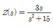
로 표시되는 리액턴스 2단자망은?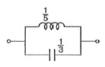
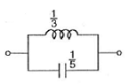
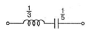
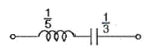
(정답률: 49%)
62. 불평형 3상 전류가 Ia=15+j2[A]. Ib=-20-j14[A], Ic=-3+j10[A]일 때, 정상분 전류 I[A]는?
- 1.91+j6.24
- -2.67-j0.67
- 15.7-j3.57
- 18.4+j12.3
(정답률: 39%)
63. RC 직렬회로의 과도현상에 대하여 옳게 설명한 것은?
- 1/RC의 값이 클수록 전류값은 천천히 사라진다.
- RC값이 클수록 과도 전류값은 빨리 사라진다.
- 과도 전류는 RC값에 관계가 없다.
- RC값이 클수록 과도 전류값은 천천히 사라진다.
(정답률: 63%)
64. 전압과 전류가 각각
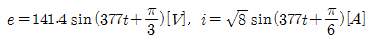
인 회로의 소비전력은 몇 [W]인가?- 100
- 173
- 200
- 344
(정답률: 63%)
65. 그림과 같은 회로의 전압비 전달함수 H(jw)는? (단, 입력 V(t)는 정현파 교류전압이며, VR은 출력이다.)
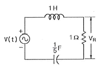
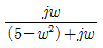
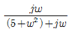
(정답률: 35%)
66. 그림과 같은 회로에서 a-b 단자에서 본 합성저항은 몇 Ω인가?
- 2
- 4
- 6
- 8
(정답률: 62%)
67. i=10sin(wt-π/6)[A]로 표시되는 전류와 주파수는 같으나 위상이 45°앞서는 실효값 100V의 전압을 표시하는 식으로 옳은 것은?
(정답률: 60%)
68. 부동작 시간(dead time) 요소의 전달 함수는?
- Ks
- K/s
- Ke-Ls
- K/Ts+1
(정답률: 69%)
69. 저항 6kΩ, 인덕턴스 90mH, 커패시턴스0.01㎌인 직렬회로에 t=0에서의 직류전압 100V를 가하였다. 흐르는 전류의 최대값 Im)은 약 몇mA인가?
- 11.8
- 12.3
- 14.7
- 15.6
(정답률: 34%)
70. 그림과 같은 회로에서 단자 a-b간의 전압 Vab[V]는?
- -j160
- j160
- 40
- 80
(정답률: 52%)
71. 회로에서 Z파라미터가 잘못 구하여진 것은?
- Z11=8
- Z12=3
- Z21=3
- Z22=5
(정답률: 65%)
72. △결선된 저항 부하를 Y결선으로 바꾸면 소비 전력은? (단, 저항과 선간 전압은 일정하다.)
- 3배로 된다.
- 9배로 된다.
- 1/9배로 된다.
- 1/3배로 된다.
(정답률: 69%)
73. 굵기가 일정한 도체에서 체적은 변하지 않고 지름을 1/n로 줄였다면 저항은?
- 1/n2로 된다.
- n로 된다.
- n2로 된다.
- n4배로 된다.
(정답률: 37%)
74. 20mH와 60mH의 두 인덕턴스가 병렬로 연결되어 있다. 합성 인덕턴스의 값[mH]은? (단, 상호인덕턴스는 없는 것으로 한다.)
- 15
- 20
- 50
- 75
(정답률: 61%)
75. 대칭 3상 전압이 있다. 1상의 Y결선 전압의 순시값이 다음과 같을 때 선간전압에 대한 상전압의 비율은?
- 약 55%
- 약 65%
- 약 70%
- 약 75%
(정답률: 47%)
76. 비정현파의 일그러짐의 정도를 표시하는 양으로서 왜형률이란?
- 평균값/실효값
- 실효값/최대값
- 고조파만의실효값/기본파의실효값
- 기본파의실효값/고조파만의실효값
(정답률: 71%)
77. 를 구하면?
(정답률: 65%)
78. 각 상의 임피던스 Z=6+j8Ω인 평형 △ 부하에 선간전압이 220V인 대칭 3상 전압을 가할 때의 선전류[A] 및 전력[W]은?(오류 신고가 접수된 문제입니다. 반드시 정답과 해설을 확인하시기 바랍니다.)
- 17A, 5620W
- 25A, 6570W
- 57A, 7180W
- 38.1A, 8712W
(정답률: 64%)
79. 그림과 같은 회로에서 저항 R에 흐르는 전류 I[A]는?
- -2
- -1
- 2
- 1
(정답률: 44%)
80. 전압 100V, 전류 15A로써 1.2kW의 전력을 소비하는 회로의 리액턴스는 약 몇 Ω인가?
- 4
- 6
- 8
- 10
(정답률: 35%)
5과목: 전기설비기술기준 및 판단 기준
81. 어느 공장에서 440V 전동기 배선을 사람이 접촉할 우려가 있는 곳에 금속관으로 시공하고자 한다. 이 금속관을 접지할 때 그 저항값은 몇 Ω이하로 하여야 하는가?(관련 규정 개정전 문제로 여기서는 기존 정답인 1번을 누르면 정답 처리됩니다. 자세한 내용은 해설을 참고하세요.)
- 10
- 30
- 50
- 100
(정답률: 63%)
82. 440V용 전동기의 외함을 접지할 때 접지 저항값은 몇 Ω 이하로 유지하여야 하는가?(관련 규정 개정전 문제로 여기서는 기존 정답인 1번을 누르면 정답 처리됩니다. 자세한 내용은 해설을 참고하세요.)
- 10
- 20
- 30
- 100
(정답률: 65%)
83. 화약류 저장소에서의 전기설비 시설기준으로 틀린 것은?
- 전용 개폐기 및 과전류 차단기는 화약류 저장소 이외의 곳에 둔다.
- 전기기계 기구는 반폐형의 것을 사용한다.
- 전로의 대지전압은 300V 이하이어야 한다.
- 케이블을 전기기계 기구에 인입할 때에는 인입구에서 케이블이 손상될 우려가 없도록 시설하여야 한다.
(정답률: 69%)
84. 사용전압이 220V인 가공전선을 절연전선으로 사용하는 경우 그 최소 굵기는 지름 몇 mm인가?
- 2
- 2.6
- 3.2
- 4
(정답률: 63%)
85. 최대 사용전압이 3300V인 고압용 전동기가 있다. 이 전동기의 절연내력 시험 전압은 몇 V인가?
- 3630
- 4125
- 4290
- 4950
(정답률: 66%)
86. 345kV 특고압 가공전선로를 사람이 쉽게 들어갈 수 없는 산지에 시설할 때 지표상의 높이는 몇 m이상인가?
- 7.28
- 7.85
- 8.28
- 9.28
(정답률: 56%)
87. 고압 지중 케이블로서 직접 매설식에 의하여 견고한 트라프 기타 방호물에 넣지 않고 시설할 수 있는 케이블은? (단, 케이블을 개장하지 않고 시설한 경우이다.)
- 미네럴 인슈레이션 케이블
- 콤바인 덕트 케이블
- 클로로프렌 외장 케이블
- 고무 외장 케이블
(정답률: 62%)
88. 피뢰기를 설치하지 않아도 되는 곳은?
- 발전소 · 변전소의 가공전선 인입구 및 인출구
- 가공전선로의 말구 부분
- 가공전선로에 접속한 1차측 전압이 35kV이하인 배전용 변압기의 고압측 및 특고압측
- 고압 및 특고압 가공전선로로부터 공급을 받는 수용장소의 인입구
(정답률: 54%)
89. 시가지에 시설하는 154kV 가공전선로를 도로와 1차 접근상태로 시설하는 경우, 전선과 도로와의 이격거리는 몇 m 이상이어야 하는가?
- 4.4
- 4.8
- 5.2
- 5.6
(정답률: 53%)
90. 지중 전선로에 사용하는 지중함의 시설기준으로 적절하지 않은 것은?
- 견고하고 차량 기타 중량물의 압력에 견디는 구조일 것
- 안에 고인 물을 제거할 수 있는 구조로 되어 있을 것
- 뚜껑은 시설자 이외의 자가 쉽게 열수 없도록 시설할 것
- 조명 및 세척이 가능한 적당한 장치를 시설할 것
(정답률: 72%)
91. 조명용 전등을 설치할 때 타임스위치를 시설해야 할 곳은?
- 공장
- 사무실
- 병원
- 아파트 현관
(정답률: 75%)
92. 지중 또는 수중에 시설되어 있는 금속체의 부식을 방지하기 위해 전기 부식 회로의 사용전압은 직류 몇 V 이하이어야 하는가?
- 30
- 60
- 90
- 120
(정답률: 64%)
93. 22900V용 변압기의 금속제 외함에는 몇 종 접지공사를 하여야 하는가?(관련 규정 개정전 문제로 여기서는 기존 정답인 1번을 누르면 정답 처리됩니다. 자세한 내용은 해설을 참고하세요.)
- 제 1종 접지공사
- 제 2종 접지공사
- 제 3종 접지공사
- 특별 제3종 접지공사
(정답률: 57%)
94. 인가에 인접한 주상변압기의 제2종 접지공사에 적합한 시공은?(관련 규정 개정전 문제로 여기서는 기존 정답인 4번을 누르면 정답 처리됩니다. 자세한 내용은 해설을 참고하세요.)
- 접지극은 공칭단면적 2mm2 연동선에 연결하여, 지하 75㎝이상의 깊이에 매설
- 접지극은 공칭단면적 16mm2 연동선에 연결하여, 지하 60㎝이상의 깊이에 매설
- 접지극은 공칭단면적 6mm2 연동선에 연결하여, 지하 60㎝이상의 깊이에 매설
- 접지극은 공칭단면적 6mm2 연동선에 연결하여, 지하 75㎝이상의 깊이에 매설
(정답률: 62%)
95. 옥내에 시설하는 저압전선으로 나전선을 절대로 사용할 수 없는 경우는?
- 금속 덕트 공사에 의하여 시설하는 경우
- 버스 덕트 공사에 의하여 시설하는 경우
- 애자 사용 공사에 의하여 전개된 곳에 전기로용 전선을 시설하는 경우
- 유희용 전차에 전기를 공급하기 위하여 접촉 전선을 사용하는 경우
(정답률: 50%)
96. 가공전선로의 지지물로서 길이 9m, 설계하중이 6.8kN 이하인 철근 콘크리트주를 시설할 때 땅에 묻히는 깊이는 몇 m 이상으로 하여야 하는가?
- 1.2
- 1.5
- 2
- 2.5
(정답률: 49%)
97. 다음 (㉠),(㉡)에 알맞은 것은?(오류 신고가 접수된 문제입니다. 반드시 정답과 해설을 확인하시기 바랍니다.)
- ㉠ 0.5, ㉡ 정격 차단 속도
- ㉠ 0.5, ㉡ 정격 감도 전류
- ㉠ 1.0, ㉡ 정격 차단 속도
- ㉠ 1.0, ㉡ 정격 감도 전류
(정답률: 45%)
98. 과전류 차단기를 시설하여도 좋은 곳은 어느 것인가?
- 2종 접지공사를 한 저압 가공전선로의 접지측 전선
- 방전 장치를 시설한 고압측 전선
- 접지 공사의 접지선
- 다선식 전로의 중성선
(정답률: 47%)
99. 다음 중에서 목주, A종 철주 또는 A종 철근 콘크리트주를 전선로의 지지물로 사용할 수 없는 보안 공사는?
- 고압 보안공사
- 제 1종 특고압 보안공사
- 제 2종 특고압 보안공사
- 제 3종 특고압 보안공사
(정답률: 66%)
100. 특고압 전로와 저압 전로를 결합하는 변압기의 경우 혼촉에 의한 위험을 방지하기 위해 저압측의 중성점에 제 몇 종 접지공사를 하여야 하는가?(관련 규정 개정전 문제로 여기서는 기존 정답인 2번을 누르면 정답 처리됩니다. 자세한 내용은 해설을 참고하세요.)
- 제1종
- 제2종
- 제3종
- 특별 제3종
(정답률: 51%)